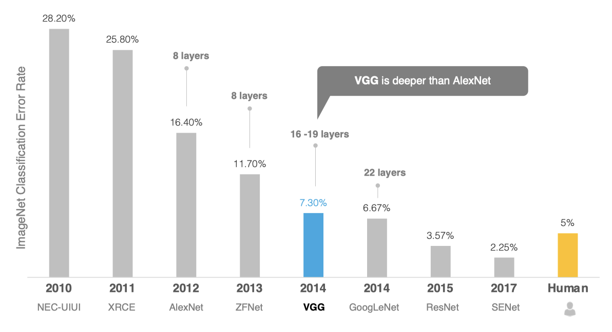
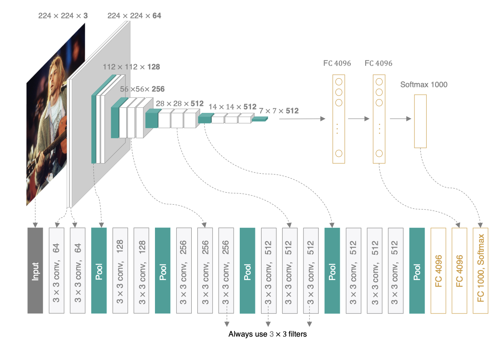
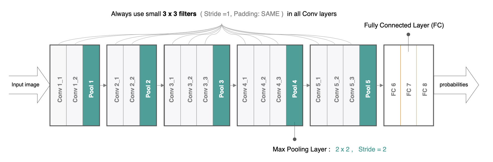
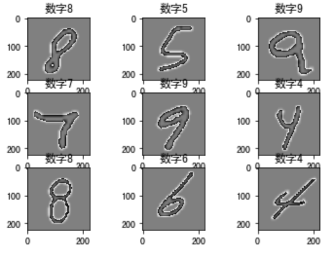

3.3 VGG¶
学习目标
- 知道VGG网络结构的特点
- 能够利用VGG完成图像分类

2014年，牛津大学计算机视觉组（Visual Geometry Group）和Google DeepMind公司的研究员一起研发出了新的深度卷积神经网络：VGGNet，并取得了ILSVRC2014比赛分类项目的第二名，主要贡献是使用很小的卷积核(3×3)构建卷积神经网络结构，能够取得较好的识别精度，常用来提取图像特征的VGG-16和VGG-19。
1.VGG的网络架构¶
VGG可以看成是加深版的AlexNet，整个网络由卷积层和全连接层叠加而成，和AlexNet不同的是，VGG中使用的都是小尺寸的卷积核(3×3)，其网络架构如下图所示：

VGGNet使用的全部都是3x3的小卷积核和2x2的池化核，通过不断加深网络来提升性能。VGG可以通过重复使用简单的基础块来构建深度模型。
在tf.keras中实现VGG模型，首先来实现VGG块，它的组成规律是：连续使用多个相同的填充为1、卷积核大小为3\times 3的卷积层后接上一个步幅为2、窗口形状为2\times 2的最大池化层。卷积层保持输入的高和宽不变，而池化层则对其减半。我们使用vgg_block函数来实现这个基础的VGG块，它可以指定卷积层的数量num_convs和每层的卷积核个数num_filters：
# 定义VGG网络中的卷积块：卷积层的个数，卷积层中卷积核的个数
def vgg_block(num_convs, num_filters):
# 构建序列模型
blk = tf.keras.models.Sequential()
# 遍历所有的卷积层
for _ in range(num_convs):
# 每个卷积层：num_filter个卷积核，卷积核大小为3*3，padding是same，激活函数是relu
blk.add(tf.keras.layers.Conv2D(num_filters,kernel_size=3,
padding='same',activation='relu'))
# 卷积块最后是一个最大池化，窗口大小为2*2，步长为2
blk.add(tf.keras.layers.MaxPool2D(pool_size=2, strides=2))
return blk
VGG16网络有5个卷积块，前2块使用两个卷积层，而后3块使用三个卷积层。第一块的输出通道是64，之后每次对输出通道数翻倍，直到变为512。
# 定义5个卷积块，指明每个卷积块中的卷积层个数及相应的卷积核个数
conv_arch = ((2, 64), (2, 128), (3, 256), (3, 512), (3, 512))
因为这个网络使用了13个卷积层和3个全连接层，所以经常被称为VGG-16,通过制定conv_arch得到模型架构后构建VGG16：
# 定义VGG网络
def vgg(conv_arch):
# 构建序列模型
net = tf.keras.models.Sequential()
# 根据conv_arch生成卷积部分
for (num_convs, num_filters) in conv_arch:
net.add(vgg_block(num_convs, num_filters))
# 卷积块序列后添加全连接层
net.add(tf.keras.models.Sequential([
# 将特征图展成一维向量
tf.keras.layers.Flatten(),
# 全连接层：4096个神经元，激活函数是relu
tf.keras.layers.Dense(4096, activation='relu'),
# 随机失活
tf.keras.layers.Dropout(0.5),
# 全连接层：4096个神经元，激活函数是relu
tf.keras.layers.Dense(4096, activation='relu'),
# 随机失活
tf.keras.layers.Dropout(0.5),
# 全连接层：10个神经元，激活函数是softmax
tf.keras.layers.Dense(10, activation='softmax')]))
return net
# 网络实例化
net = vgg(conv_arch)
我们构造一个高和宽均为224的单通道数据样本来看一下模型的架构：
# 构造输入X，并将其送入到net网络中
X = tf.random.uniform((1,224,224,1))
y = net(X)
# 通过net.summay()查看网络的形状
net.summay()
网络架构如下：
Model: "sequential_15"
_________________________________________________________________
Layer (type) Output Shape Param #
=================================================================
sequential_16 (Sequential) (1, 112, 112, 64) 37568
_________________________________________________________________
sequential_17 (Sequential) (1, 56, 56, 128) 221440
_________________________________________________________________
sequential_18 (Sequential) (1, 28, 28, 256) 1475328
_________________________________________________________________
sequential_19 (Sequential) (1, 14, 14, 512) 5899776
_________________________________________________________________
sequential_20 (Sequential) (1, 7, 7, 512) 7079424
_________________________________________________________________
sequential_21 (Sequential) (1, 10) 119586826
=================================================================
Total params: 134,300,362
Trainable params: 134,300,362
Non-trainable params: 0
__________________________________________________________________
2.手写数字势识别¶
因为ImageNet数据集较大训练时间较长，我们仍用前面的MNIST数据集来演示VGGNet。读取数据的时将图像高和宽扩大到VggNet使用的图像高和宽224。这个通过tf.image.resize_with_pad来实现。
2.1 数据读取¶
首先获取数据,并进行维度调整：
import numpy as np
# 获取手写数字数据集
(train_images, train_labels), (test_images, test_labels) = mnist.load_data()
# 训练集数据维度的调整：N H W C
train_images = np.reshape(train_images,(train_images.shape[0],train_images.shape[1],train_images.shape[2],1))
# 测试集数据维度的调整：N H W C
test_images = np.reshape(test_images,(test_images.shape[0],test_images.shape[1],test_images.shape[2],1))
由于使用全部数据训练时间较长，我们定义两个方法获取部分数据，并将图像调整为224*224大小，进行模型训练：
# 定义两个方法随机抽取部分样本演示
# 获取训练集数据
def get_train(size):
# 随机生成要抽样的样本的索引
index = np.random.randint(0, np.shape(train_images)[0], size)
# 将这些数据resize成22*227大小
resized_images = tf.image.resize_with_pad(train_images[index],224,224,)
# 返回抽取的
return resized_images.numpy(), train_labels[index]
# 获取测试集数据
def get_test(size):
# 随机生成要抽样的样本的索引
index = np.random.randint(0, np.shape(test_images)[0], size)
# 将这些数据resize成224*224大小
resized_images = tf.image.resize_with_pad(test_images[index],224,224,)
# 返回抽样的测试样本
return resized_images.numpy(), test_labels[index]
调用上述两个方法，获取参与模型训练和测试的数据集：
# 获取训练样本和测试样本
train_images,train_labels = get_train(256)
test_images,test_labels = get_test(128)
为了让大家更好的理解，我们将数据展示出来：
# 数据展示：将数据集的前九个数据集进行展示
for i in range(9):
plt.subplot(3,3,i+1)
# 以灰度图显示，不进行插值
plt.imshow(train_images[i].astype(np.int8).squeeze(), cmap='gray', interpolation='none')
# 设置图片的标题：对应的类别
plt.title("数字{}".format(train_labels[i]))
结果为：

我们就使用上述创建的模型进行训练和评估。
2.2 模型编译¶
# 指定优化器，损失函数和评价指标
optimizer = tf.keras.optimizers.SGD(learning_rate=0.01, momentum=0.0)
net.compile(optimizer=optimizer,
loss='sparse_categorical_crossentropy',
metrics=['accuracy'])
2.3 模型训练¶
# 模型训练：指定训练数据，batchsize,epoch,验证集
net.fit(train_images,train_labels,batch_size=128,epochs=3,verbose=1,validation_split=0.1)
训练输出为：
Epoch 1/3
2/2 [==============================] - 34s 17s/step - loss: 2.6026 - accuracy: 0.0957 - val_loss: 2.2982 - val_accuracy: 0.0385
Epoch 2/3
2/2 [==============================] - 27s 14s/step - loss: 2.2604 - accuracy: 0.1087 - val_loss: 2.4905 - val_accuracy: 0.1923
Epoch 3/3
2/2 [==============================] - 29s 14s/step - loss: 2.3650 - accuracy: 0.1000 - val_loss: 2.2994 - val_accuracy: 0.1538
2.4 模型评估¶
# 指定测试数据
net.evaluate(test_images,test_labels,verbose=1)
输出为：
4/4 [==============================] - 5s 1s/step - loss: 2.2955 - accuracy: 0.1016
[2.2955007553100586, 0.1015625]
如果我们使用整个数据集训练网络，并进行评估的结果：
[0.31822608125209806, 0.8855]
总结
- 知道VGG的网络架构
- 动手实现手写数字的识别